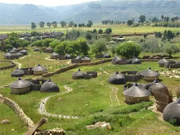
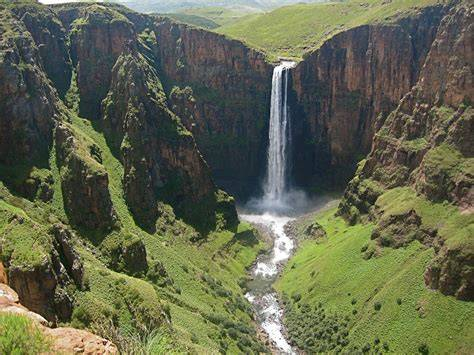
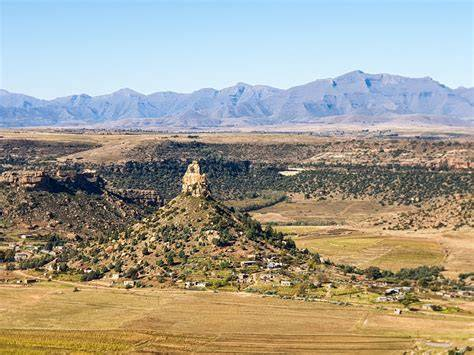

These are some of the place some of the place that are highly recommended to be visited when coming to this country.

This is Thaba-Bosiu cultural Village in the capital city Maseru, it lies at the foot of the famous mountain Thaba-Bosiu, which is known to grow in the night time. This was known to grow at night as a way of protecting the people on top of it. Thaba Bosiu is the birth place of Basotho nation and it holds a deep historical significance as the stronghold of King Moshoeshoe l.

This one of the many beautiful sites of the beautifu country of Lesotho, Maletsunyane falls, one of the highest single drop waterfalls in Southern Africa, standing at 192 meters(630 feat). Here at Maletsunyane Falls one can engage in a variety of activities that combine advebture and natural beauty. These activities include, hiking up to the top of Maletsunyane Falls, swimming in the pooled area at the bottom of the waterfall and picknicking near in some areas near the falls having a beautiful view of the falls while enjoying a nice meal.

This is Afriski Maountain Resort found high in the mountains, in Oxbow, this place is an all year round fun wonderland, it is advisable to visit during the wintwer holidays and in the summer because it offers fun at all times wheather it is summer or winter. In the winter visitors enjoy skiing, snowboarding,tubbing and many other, while in the summer there are activities such as, mountain biking, Jeep trail rides, mountain scooters, quad biking and many other, so this place is good to visit at any season beacause there is a lots of fun to be had.

Come to the Kingdom of Lesotho and stand at the top of Thaba-Bosiu and witness a stunning view of the inspiration behind the Basotho hat (Mokorotlo) and learn about why the mountain was chosen to style the traditional hat of the Basotho nation. Com and witness more stunning views of the Cultural Village from the top of the beautiful mountain of Thaba-Bosiu.

When yhou come to Lesotho we don't just come for the tourist attraction, we also come to cellebrate. This is one of the biggest events that take place here in Lesotho, the Maletsunyane Braai Festival where people come together for 3-days to enjoy live music, DJ Performances and trditional braai(barbecue) experiences. So in Lesotho we are not only known for beautiful tourist attractions but celebrating with other people.

Another one of the big events that take place in our beautiful country. This is roof of Africa a 3-day, 250km-350km dirt-bike race tht goes accross the mountainiouus land of Lesotho. People come from all over the world others come to ride in the race while others come to watch or cheer on their relatives who have entered the race, so come to Lesotho and witness this first hand.
In Lesotho we do not only supply you with beauty but we also supply you with fun, so when the time is right pack your bags, grab your passport and come to Lesotho because what you see here is only a few of what actualy happens. So come on there is a lot of funnto be had and a lot of memories to be made.